tmux가 하던 일과 그 불편함
영상은 Rex가 원격 머신에서 Claude를 돌리고 있는 화면으로 시작해요. 왼쪽 위 칸에는 에이전트가 git diff를 보고 남긴 리뷰가, 오른쪽에는 그 에이전트가 만든 뱀 게임이, 왼쪽 아래에는 Git 변경 내역이 떠 있어요. 발표자는 노트북을 닫았다 열어도 Claude가 그동안 계속 일했고, tmux도 SSH도 쓰지 않았다고 말해요.
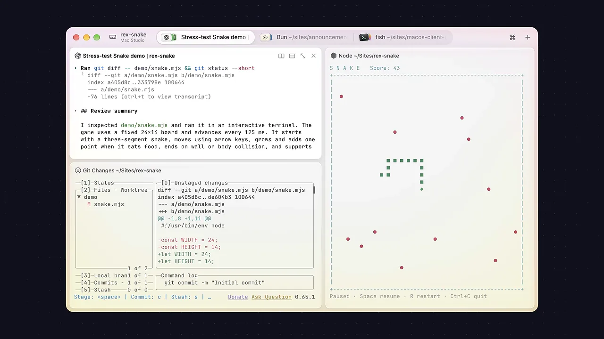
Rex를 만든 사람은 Ghostty 제작자이자 HashiCorp 공동창업자인 Mitchell Hashimoto예요. HashiCorp는 Terraform을 만든 회사예요. 공식 발표문은 Rex를 '지금 쓰는 터미널을 그대로 갈아끼울 수 있는 터미널'이라고 소개해요.
보통 터미널과 뭐가 다를까요. 화면에 나란히 놓인 세 아이콘이 답이에요. Ghostty처럼 화면을 그리는 터미널, Tailscale로 다른 머신에 붙는 연결, tmux처럼 세션을 살려 두는 멀티플렉서를 한 앱에 담았어요.
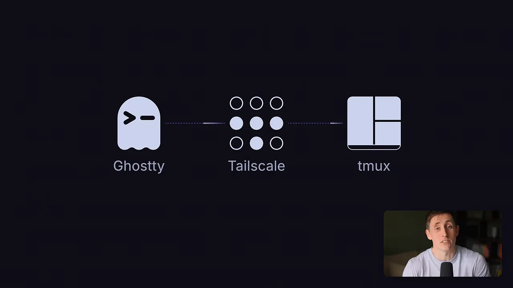
왜 다들 tmux를 쓸까요
Ghostty도 창을 여러 칸으로 나눌 수 있어요. 문제는 터미널이 자기가 띄운 프로그램을 모두 소유한다는 점이에요. 앱을 끄면 그 안의 프로그램도 같이 끝나요.
그래서 tmux를 써요. 아래 그림에서 tmux 상자 안에 claude와 npm run dev가 들어 있고, 위의 Terminal 상자는 비어 있어요. 프로그램은 tmux가 붙잡고, 터미널은 tmux가 하는 일을 비춰 줄 뿐이라는 뜻이에요. 터미널을 닫고 새로 연 다음 tmux에 같은 작업을 다시 달라고 하면 돼요. 이걸 디태치와 어태치라고 불러요.
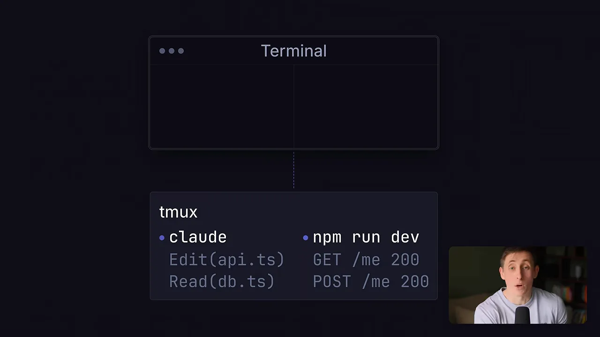
tmux가 터미널 경험을 해치는 이유
그런데 tmux도 그 자체로 하나의 터미널이에요. 다음 슬라이드는 이 흐름을 왼쪽에서 오른쪽으로 보여 줘요. claude가 찍은 출력을 가운데 tmux가 읽어서 자기 화면을 그리고, 그걸 오른쪽 Terminal로 보내요.
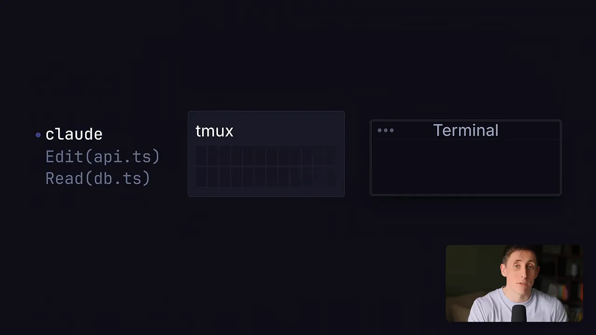
그래서 스크롤하거나 글자를 고를 때 실제로 그 일을 하는 건 tmux예요. 창 분할과 세션에는 따로 익혀야 할 단축키와 설정 파일도 따라와요.
Mitchell Hashimoto 본인도 이 점을 짚었어요. 화면에 뜬 인용문은 2024년 12월 Changelog 팟캐스트에서 한 말이에요.
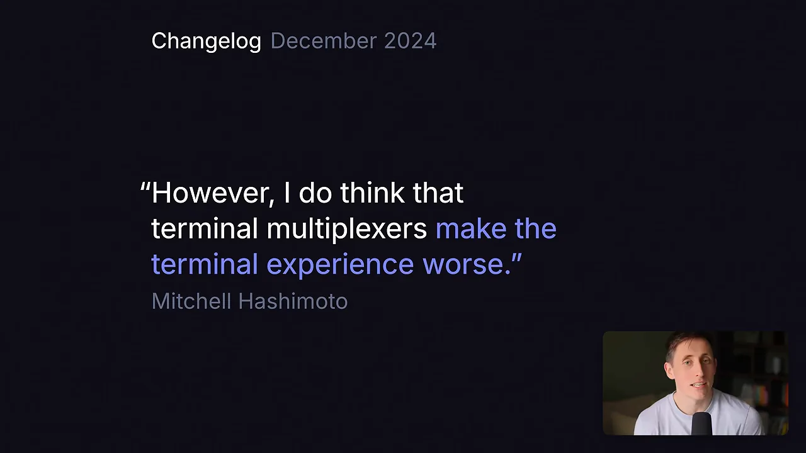
run basically like a Ghostty host instance on my home computer, run it against your Tailscale network, and then anywhere you go, reopen, reconnect, and it's your same sessions.
집 컴퓨터에서 Ghostty 호스트를 돌리고 Tailscale 네트워크에 물려 두면, 어디서든 다시 열고 다시 붙었을 때 같은 세션이 그대로 있는 거죠.
— Mitchell Hashimoto, Changelog 2024년 12월 (영상 01:05)
그가 바란 모습은 이랬어요. 집 컴퓨터에서 호스트를 돌리고, 내 기기끼리만 쓰는 사설 네트워크인 Tailscale로 묶어 두는 거예요. 그러면 어디서 열든 같은 세션으로 돌아갈 수 있어요. Rex는 이 그림을 그대로 제품으로 만든 셈이에요.
Rex는 서버와 창을 나눠요
Rex는 tmux 구조에서 가운데 부분만 남겨요. 백그라운드에서 프로그램을 붙잡는 서버예요. Rex 앱은 그 서버를 들여다보는 창일 뿐이에요.
아래 슬라이드에서 위 상자가 Rex app, 아래 상자가 Rex server예요. 두 상자에 같은 claude와 npm run dev가 보이지만, 실제로 프로그램을 들고 있는 건 아래 서버예요. 오른쪽 위 libghostty 표시는 앱이 Ghostty와 같은 엔진으로 화면을 직접 그린다는 뜻이에요.
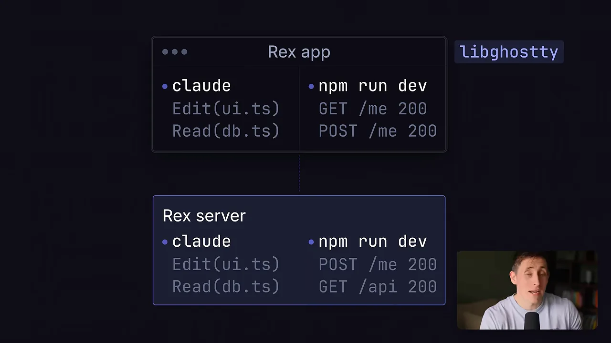
| tmux를 쓸 때 | Rex | |
|---|---|---|
| 프로그램을 붙잡는 쪽 | tmux (백그라운드) | Rex server (백그라운드) |
| 화면을 그리는 쪽 | tmux가 한 번 그리고, 터미널이 다시 그려요 | Rex app이 libghostty로 직접 그려요 |
| 스크롤·글자 선택 | tmux가 대신 처리 | Mac 앱처럼 그대로 |
| 따로 배울 것 | tmux 단축키와 설정 | 영상은 언급하지 않았어요 |
정말 따로 도는지 확인해 봤어요
발표자는 자기 Mac에서 직접 확인했어요. ps로 Rex 프로세스를 찾으면 두 줄이 나와요. 36987번이 Rex Beta.app, 37129번이 Rex Server.app의 rex server run이에요.
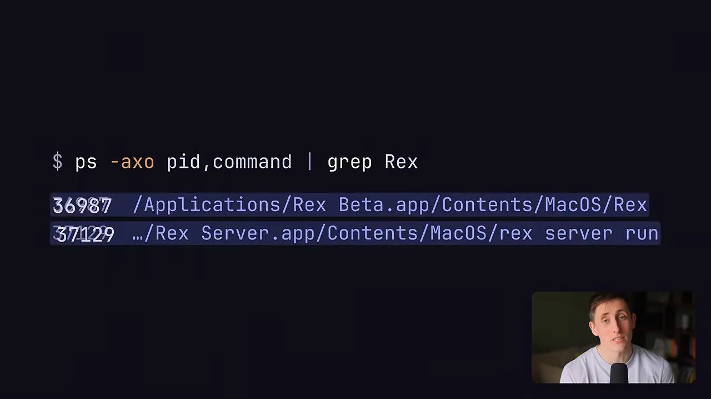
ps -axo pid,command | grep Rex # 앱과 서버 프로세스 확인
rex server status # 앱을 꺼도 pid: 37129, sessions: 1다른 머신의 서버에도 붙어요
앱이 창일 뿐이라서 다른 머신의 Rex 서버도 열 수 있어요. 그림 왼쪽이 Rex 앱을 띄운 MacBook, 오른쪽 위가 mini-rex라는 이름의 Mac mini예요. Mac mini의 Rex server 안에서 claude가 script.md를 읽고 고치는 중이고, 둘 사이를 Tailscale이 이어요.
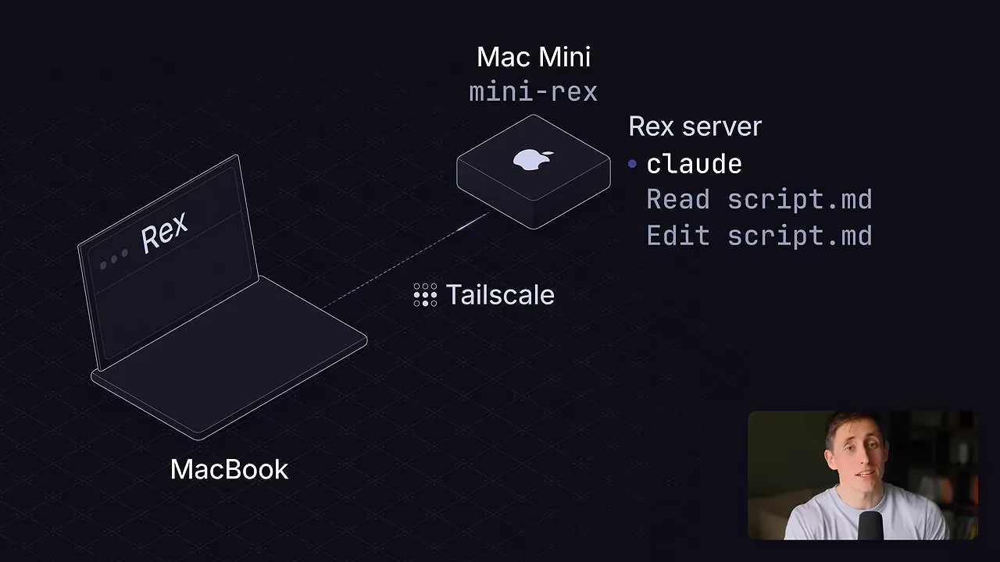
반대 경우도 보여 줘요. 다음 그림은 MacBook을 덮은 상태예요. Mac mini 쪽 claude는 여전히 일하는데, MacBook 자체의 Rex server에 있던 npm run dev에는 Paused가 붙었어요.
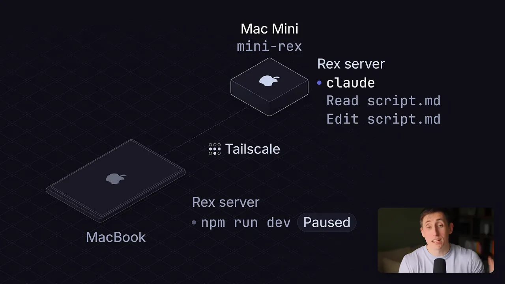
설치하고, 갈아탈지 고르기
설치는 이렇게 해요
한 머신에서만 쓸 거라면 Mac 앱만 깔면 바로 시작할 수 있어요. 여러 머신을 오가려면 네 단계가 필요해요.
- 두 머신 모두에 Rex를 설치해요
- 두 머신 모두 같은 계정으로 Tailscale에 로그인해요
- Tailscale 관리 콘솔에서 HTTPS(Hypertext Transfer Protocol Secure) 인증서를 켜요 — 영상은
console.tailscale.com/admin/dns페이지에서 켜요. - 로컬 Rex 클라이언트에 원격 호스트를 추가해요 왼쪽 위 호스트 선택기에 원격 머신 이름이 생겨요
설정을 마치면 Rex 창 왼쪽 위의 호스트 선택기가 쓸모 있어져요. 펼친 목록에 This Mac, Macbook, mini-rex 주소, Mini가 보이고, 맨 아래 파란 줄이 Add Remote Host예요. 여기서 Mini를 고르면 그 머신에 바로 세션이 열려요.
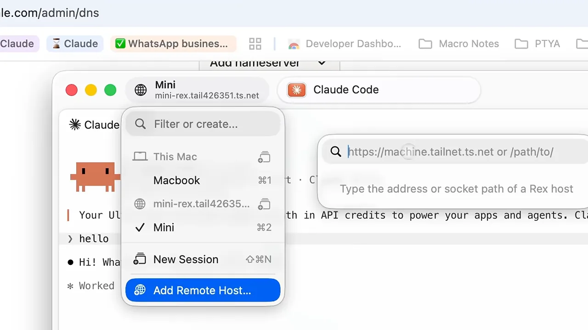
Claude가 Rex를 직접 조작하게 할 수도 있어요. rex skill setup을 실행하면 AI(Artificial Intelligence)에게 Rex CLI(Command-Line Interface) 쓰는 법을 가르쳐 줘요.
갈아탈까요?
발표자는 바로 갈아타기 전에 따져 볼 점을 이렇게 꼽아요.
- 데스크톱 앱은 지금 Mac 전용이에요.
- 벤처 투자를 받은 스타트업이 만든 비공개 소스 제품이에요.
- 수익 모델은 정식 출시 전에 밝히겠다고만 했어요.
마지막 항목은 Superlogical 발표문에 그대로 있어요. 노란 형광펜 부분이 '상업화 계획은 아직 밝힐 준비가 안 됐고, 정식 공개 전에 더 얘기하겠다'는 문장이에요. 바로 위에는 'Rex는 앞으로도 무료'라는 문장도 보여요.
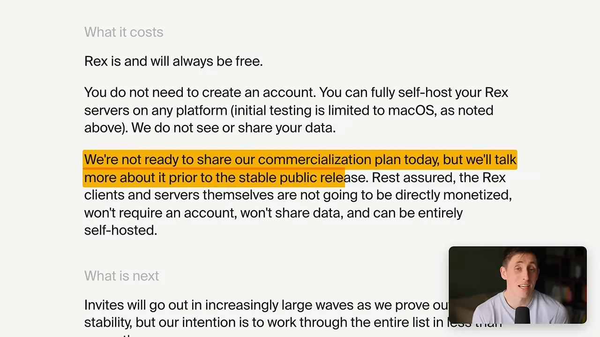
다른 도구와 비교하면 이래요.
| 도구 | 잘 맞는 경우 | 걸리는 점 |
|---|---|---|
| tmux | SSH로 들어가는 서버. 어느 터미널, 거의 어느 머신에서든 돌아요 | 화면을 한 번 더 그리고, 단축키와 설정을 따로 배워야 해요 |
| Herdr | 오픈소스를 원할 때. Windows·Linux에서도 돌아요 | 터미널과 Herdr를 따로 갖춰야 해요 |
| Rex | 터미널·멀티플렉서·원격 연결을 한 제품으로 원할 때 | 내 쪽에 전용 앱이 있어야 하고, 지금은 Mac 전용이에요 |
발표자의 결론은 이래요. 에이전트를 돌릴 때는 여전히 Orca를 매일 써요. 그래도 Mac과 Mac mini에서 일회성 명령을 돌리는 단순한 터미널로는 Rex가 좋은 선택이라고 봐요.
써 보면 이런 모습이에요
설정을 마친 Rex는 Ghostty처럼 깔끔한 터미널이에요. 아래 화면은 MacBook 호스트에서 창을 좌우로 나눠 zsh 두 개를 띄운 모습이에요. 위쪽 탭 줄 맨 앞에 지금 붙어 있는 호스트 이름(Macbook, This Mac)이 보여요.
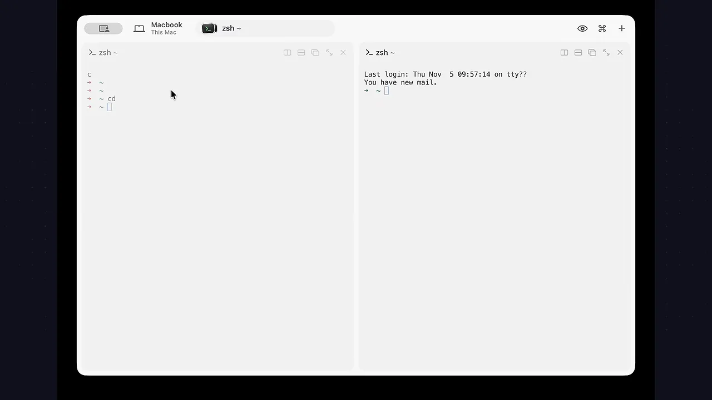
호스트를 Mini로 바꾸면 같은 창에서 Mac mini의 세션이 열려요. 다음 화면은 Mini 호스트에서 Claude Code를 띄우고 hello를 보낸 직후예요. 탭 줄 앞의 호스트 표시가 Mini와 그 Tailscale 주소로 바뀌었어요.
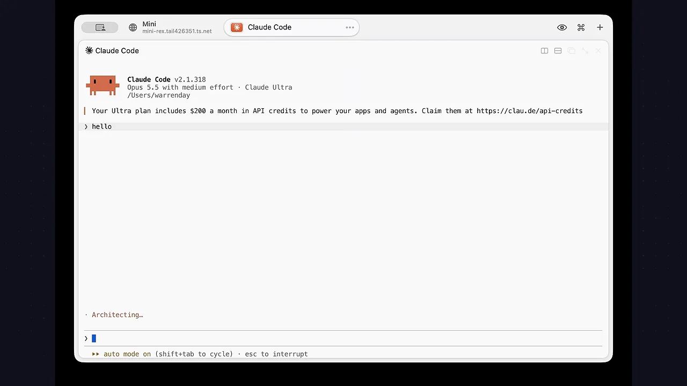
영상 설명란에 링크가 있어요. 보는 시점에 따라 대기자 명단에 등록하거나 바로 내려받을 수 있어요.